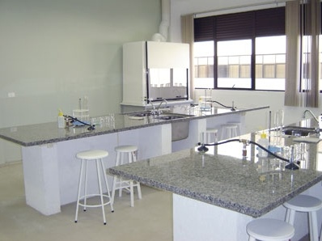

Techno on the Brain
Rhythmic Scaffolding and Visual Temporal Order Memory
Does a techno track synchronized with a sequence of images improve memory for the order in which the images appeared?
- 59Participants
- 4Auditory conditions
- 40Trials per participant
- NullEffect on accuracy
At a glance
- Role
- First author
- Advisor
- Dr. Michael Miller
- Graduate supervisor
- Luna Li
- Lab
- Memory & Decision Making Lab, UC Santa Barbara
- Tools
- jsPsych, R, Ableton Live
- Status
- Completed May 2026
Overview
This honors thesis tested a prediction of Dynamic Attending Theory: that synchronizing visual encoding with an auditory beat improves memory for events aligned with the beat. Earlier behavioral tests of this prediction measured recognition of items. This study tested it on memory for the temporal order of events.
Fifty-nine UCSB undergraduates completed a two-alternative temporal order judgment task across four auditory conditions: Sync, Out-of-sync, Metronome, and Ambient.
The result was a null. Auditory condition had no effect on accuracy, and neither attentional control nor musical sophistication moderated the result.
The question
Does rhythmic scaffolding extend to memory for the order of visual events?
Dynamic Attending Theory holds that attention oscillates in time and phase-locks to rhythm in the environment. If so, an image that appears on the beat should be encoded better than one that appears between beats.
Prior findings
Early behavioral tests reported modest benefits of rhythmic timing for recognition memory (Thavabalasingam et al., 2016; Johndro et al., 2019). Under tighter controls the effect shrank. Hickey et al. (2020) obtained a full-sample null, and a registered report by Jones et al. (2023) reported a Bayes factor of 0.11, evidence in favor of the null.
Each of those studies measured item recognition: whether a stimulus had appeared at all. None tested temporal order memory, the dimension that the neural mechanism most often invoked for rhythmic processing has been linked to (Jiang et al., 2025). This thesis tested the prediction there.
Design
Within-subjects. Each of 59 participants completed 40 trials, 10 per auditory condition, in an order randomized for each participant. Testing took place in person in March and April 2026.
Auditory conditions
Sync
Image onsets coincided with the beat.
Out-of-sync
The same track shifted by 233 ms, so image onsets fell between beats.
Metronome
Isochronous clicks at the same tempo.
Ambient
A continuous track with no beat.
Task: temporal order judgment

- Encoding: 10 photographs from the MIT Indoor Scenes Dataset appeared one at a time, each for 933 ms (two beats), while the audio played.
- Test: two images from the sequence appeared side by side, and participants pressed a key for the one that had come first.
Measures
- Accuracy on the temporal order judgment was the dependent variable.
- Moderators: the Attentional Control Scale and the Goldsmiths Musical Sophistication Index.
- Lag: the distance between the two test images in the sequence (Short, Medium, Long).
What the conditions isolate
- Sync vs. Out-of-sync. One audio file shifted in time. Tempo, loudness, spectral content, and predictability are identical. Only the phase between sound and image differs.
- Metronome. Separates rhythmic structure from musical content.
- Ambient. Separates the presence of sound from rhythmic structure.
- Lag. A check on the task: accuracy should rise as the two test images sit further apart.
Hypothesis
Accuracy would be higher in the Sync condition than in the Out-of-sync condition.
In Sync trials, image onsets coincided with the beat, the moment at which Dynamic Attending Theory predicts attention to peak. In Out-of-sync trials, image onsets fell between beats. The Metronome and Ambient comparisons were interpretive, not predictive.
Build and analysis
jsPsych
I programmed the experiment in jsPsych. Participants were tested in the lab on a 60 Hz monitor with over-ear headphones and responded with the F and J keys.
Audio stimuli
I composed the techno track in Ableton Live with a Roland TR-909 drum kit: a four-on-the-floor pattern at 128.57 BPM. Each image lasted exactly two beats. The Out-of-sync condition used the same file shifted by half a beat.
Analysis in R
A one-way repeated-measures ANOVA on accuracy, with Bonferroni-corrected pairwise comparisons. Each moderator was tested in a linear mixed-effects model with a random intercept for participants.
Results
Mean accuracy across all conditions was 67.84%, above the 50% chance level, t(58) = 12.25, p < .001, d = 1.59.
Temporal order accuracy by auditory condition
Mean accuracy: Sync 64.58%, Out-of-sync 69.15%, Metronome 68.47%, Ambient 69.15%. Chance is 50%.
Effect of auditory condition
F(2.97, 172.23) = 1.47, p = .224, ηG² = .014Not significant. Accuracy did not differ across the Sync, Out-of-sync, Metronome, and Ambient conditions.
Sync vs. Out-of-sync
t = -1.87, p = .398, d = -0.27Not significant after Bonferroni correction. Sync accuracy was 4.58 percentage points lower, opposite to the predicted direction.
Lag
F(1.63, 94.50) = 2.56, p = .093Accuracy rose with lag (65.75%, 68.01%, 71.43%), in the predicted direction. The effect was not significant.
Attentional control
F(3, 165) = 1.41, p = .243No Condition × Attentional Control interaction.
Musical sophistication
F(3, 171) = 1.25, p = .295No Condition × Musical Sophistication interaction.
What it means
The prediction was not supported. Synchronizing image onsets with the beat did not improve memory for the order of the images.
The task worked as a measure of order memory. Accuracy was well above chance, and it rose as the two test images sat further apart in the sequence. The null therefore reflects the absence of an effect at the size this design could detect, and not a failure to measure memory.
The result joins a run of null findings on this question (Hickey et al., 2020; Jones et al., 2023). Dynamic Attending Theory is well supported as an account of perception and timing. The claim tested here was its extension to memory: that attention entrained to a beat during encoding leaves a measurable trace in what is later remembered. These data do not support that extension.
Limitations
- Each trial played about 10 seconds of audio, which may be too short for a beat to entrain attention.
- The study did not measure whether participants noticed the timing relationship between sound and image.
- One tempo (about 129 BPM) and one set of stimuli were tested.
- With N = 59, the design had 80% power to detect a condition effect of ηG² ≥ .043 and a Sync versus Out-of-sync difference of dz ≥ 0.37. Smaller effects cannot be ruled out.
Future directions
- Play the rhythm for longer than one encoding sequence, or continuously across trials.
- Measure awareness of the timing relationship between sound and image.
- Test a range of tempos and stimulus types.
Open to research, analyst, and music-industry roles.